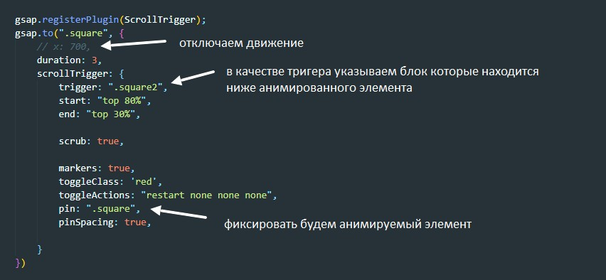

Всвойство pin - фиксирует тригер на той высоте относительно верхней границы вьюпорта на которой он был в момент начала анимации все элементы которые были ниже элемента тригера так же будут зафиксированы
так же в качестве значения можно указать селектор элемента который будет зафиксирован. По умолчанию между тригером и анимированным элементом добавляется воздух (некоторе) пространство. Если добавить свойство pinSpacing: false, - то между этими двумя элементами не будет никакого пространства
возможные значения свойства pinSpacing
если убрать x:700 то получится что анимированный объект зафиксируется на месте на время анимации, и как только тригер коснется до анимированного объекта, они оба полетят вверх вместе со скролом